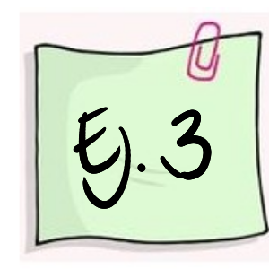
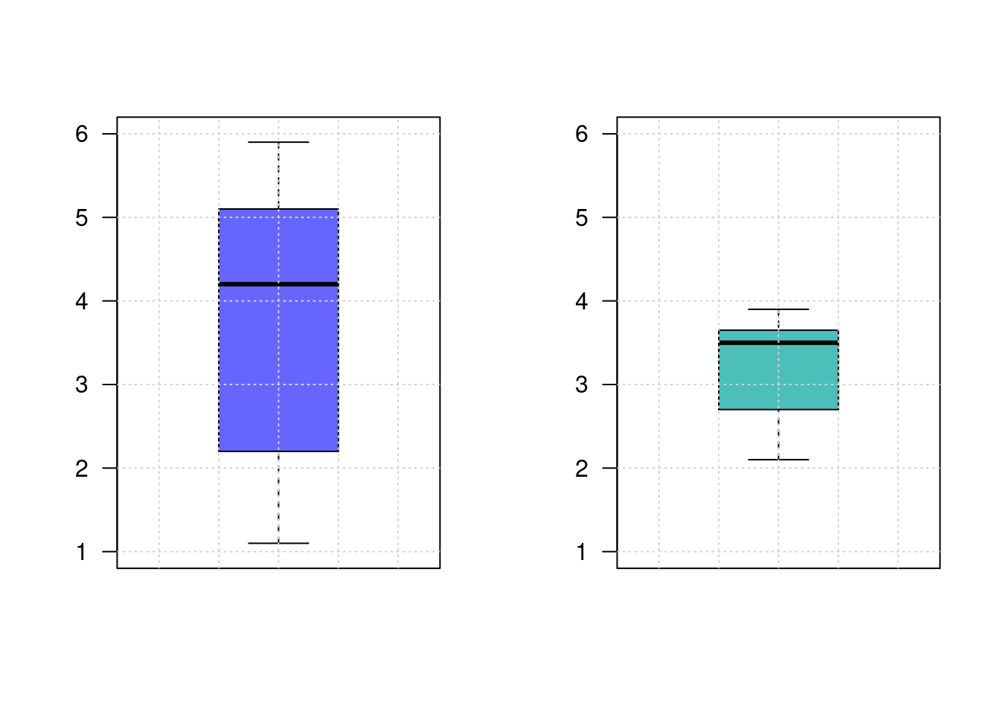
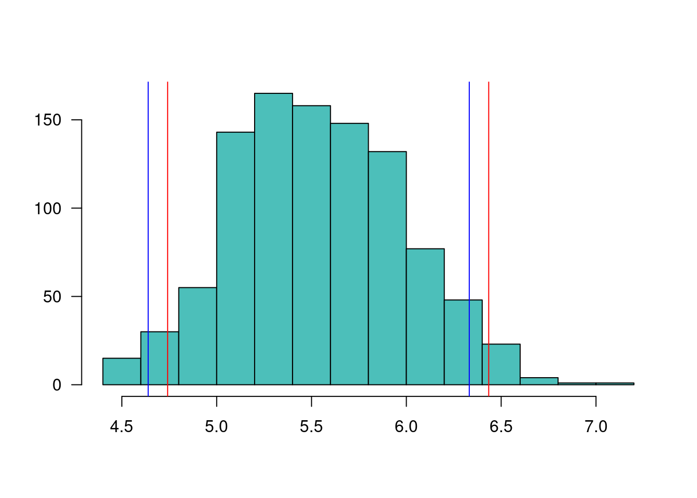
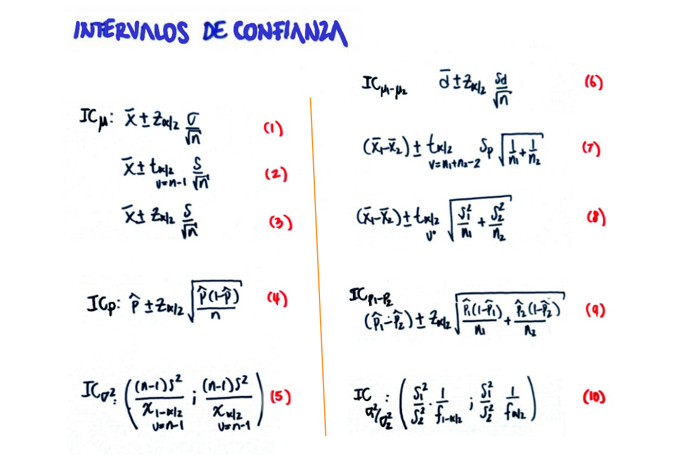

Estimación por intervalos de confianza
Módulo 4- Unidad 4.2
dgonzalez
Guía de aprendizaje 4.2

1. Introducción
La inferencia estadística constituye una de las principales componentes de la metodologia estadistica, encaminados a generar procedimiento para el avance de la ciencia. Con ella se pueden generalizar los resultados obtenidos en una muestra a toda la población, previo cumplimiento de supuestos establecidos por la estadística (llamada paramétrica) .
Antes de empezar es necesario entender los conceptos básicos como: población, censo, parámetro, muestra, muestreo, estimador, estimación, métodos de estimación, propiedades de los estimadores como la insesgadez, la eficiencia, la consistencia .Las distribuciones muestrales : normal, t-student, chi-cuadrado y f de Fisher. Todos trabajados y tratados en la unidad 4.1.
El siguiente documento te oriente sobre los pasos a seguir para alcanzar el objetivo planteado
2. Objetivos de la unidad
Al finalizar la unidad el estudiante estará en capacidad de IDENTIFICAR, CALCULAR, INTERPRETAR e INFERIR sobre un intervalo de confianza para estimadores de una y dos poblaciones, que le permita seleccionar la mejor alternativa para la estimación de un parámetro poblacional, orientados a la toma de decisiones informadas.
3. Duración
La presente unidad será desarrollada del 6 al 24 de octubre de 2021 . Ademas del material suministrado contaran con el acompañamiento del profesor durante las sesiones de clase y de manera asincrónica con foro de actividades académicas. Los entegables para esta unidad podrán enviarse a través de la plataforma Brightspace hasta el 24 de octubre de 2021
Para alcanzar los objetivos planteados se propone realizar las siguientes actividades
4. Cronograma de trabajo
| Actividad | Descripción |
|---|---|
| Actividad 1 | Construir un mapa mental sobre intervalos de confianza elaborado a mano, el cual deberá ser entregado en formato pdf |
| Trabajo individual | |
| Fecha | 24 de octubre de 2021 |
| Hora | 23:59 hora local |
| Actividad 2 | Resuelva las preguntas y problemas planteadas en el Taller 421 y entregue su solución en formato pdf en el enlace correspondiente de Brightspace |
| Trabajo individual | |
| Fecha | 24 de octubre de 2021 |
| Hora | 23:59 hora local |
5. Criterios de evaluación
6. Entregables
| Entregable 1 | Mapa mental sobre intervalos de confianza |
| Entregable 2 | Solucionario taller 421 de problemas sobre intervalos de confianza |
| Fecha | 24 de octubre de 2021 |
| Hora | 23:59 hora local |
Recursos
Estimación por IC

Un estimador por intervalo de confianza (IC) es una regla que especifica como usar las mediciones obtenidas en una muestra para calcular dos números que forman los extremos del intervalo que confiamos contenga al parámetro de interés \(\theta\). Dependiendo del parámetro se utiliza en la construcción del IC las distribuciones muestrales: \(normal\) \(estándar\) (\(Z\)), \(t-Student\), \(\chi^{2}\) o \(F-Fisher\)
Una población
Intervalos de confianza para la media, con varianza conocida
Partimos de dos valores que contiene el parámetro \(\theta\)
\[L_{I} \leq \theta \leq L_{S} \]
bajo el supuesto de que
\[Z=\frac{\bar{X}-\mu}{\sigma/\sqrt{n}} \sim N(0,1)\]
podemos construir el siguiente intervalo
\[P(L_{IC} \leq Z \leq L_{SC})=1-\alpha \]
donde \((1-\alpha)\) conforma el concepto de confianza, el cual difiere del concepto de probabilidad, en cuanto la confianza representa la proporción de intervalos que contienen el parámetro. Lo que significa que de 100 intervalos construidos a partir muestras aleatorias, \((1-\alpha)\)% o más contendrán el parámetro.
\[\begin{eqnarray*} P(-z_{\alpha/2} \leq Z \leq z_{\alpha/2})&=&1-\alpha \\ P\Bigg(-z_{\alpha/2} \leq \frac{\bar{X}-\mu}{\sigma/\sqrt{n}} \leq z_{\alpha/2}\Bigg)&=&1-\alpha\\ P\Bigg(\bar{X}-z_{\alpha/2}\frac{\sigma}{\sqrt{n}} \leq \mu \leq \bar{X}+z_{\alpha/2}\frac{\sigma}{\sqrt{n}}\Bigg)&=&1-\alpha \\ \end{eqnarray*}\]
el intervalo de confianza para la media poblacional queda determinado por:
\[IC_{\mu}: \bar{x} \pm z_{\alpha/2} \hspace{.1cm}\dfrac{\sigma}{\sqrt{n}} \]
Supuestos: + \(X\sim N(\mu,\sigma^{2})\) + varianza conocida
Intervalo de confianza para la media, con varianza desconocida
\[T=\dfrac{\bar{X}-\mu}{s/ \sqrt{n}}\]
se distribuye t student con \(n-1\) grados de libertad y el intervalo se construye \
\[\begin{eqnarray*} P\Big(-t_{\alpha/2} \leq T \leq t_{\alpha/2} \Big)&=&1-\alpha \\ P\Big(-t_{\alpha/2} \leq \frac{\bar{X}-\mu}{s/\sqrt{n}} \leq t_{\alpha/2} \Big)&=&1-\alpha \\ P\Bigg(\bar{X}-t_{\alpha/2} \dfrac{s}{\sqrt{n}} \leq \mu \leq \bar{X}+t_{\alpha/2}\dfrac{s}{\sqrt{n}}\Bigg)&=&1-\alpha \\ \end{eqnarray*}\]
\[IC_{\mu}: \bar{x} \pm t_{\alpha/2} \hspace{.1cm}\frac{s}{\sqrt{n}} \]
Supuestos: + \(X\sim N(\mu,\sigma^{2})\) + varianza desconocida
Cuando el tamaño de la muestra se considera grande (usualmente \(n>30\)) el estadístico T se aproxima a la distribución normal estandar, en este caso el intervalo de confianza se puede construir a a partir de:
\[IC_{\mu}: \bar{x} \pm z_{\alpha/2} \hspace{.1cm}\dfrac{s}{\sqrt{n}} \]
Supuestos:
- \(X\sim N(\mu,\sigma^{2})\)
- varianza desconocida
| Se registró el tiempo transcurrido entre la facturación y la recepción del pago, para una muestra de 100 clientes en una empresa. La media y la desviación estándar son respectivamente: 39.1 días y 17.3 días. Con el fin de establecer una medición de la calidad en el servicio, se requiere determinar una estimación del 95% para la media. |
Solución
La estimación del tiempo que demora el pago de una factura es un valor de importancia tanto para empresarios como para proveedores, pues esta información se utiliza para la programación de gastos e ingresos. El problema nos suministra la siguiente información:
- \(\bar{x}=39.1\) días
- \(s=17.3\) días, lo que significa que se desconoce la varianza
- \(n=100\) que se considera grande
- se requiere construir un IC del 95% para \(\mu\), que implica un valor del percentil \(z=\pm 1.96\)
\[\bar{x} \pm z_{\alpha/2} \frac{s}{\sqrt{n}} \]
\[39.1 \pm 1.96 \frac{17.3}{\sqrt{100}} \]
\[\Bigg(39.1 -1.96 \frac{17.3}{\sqrt{100}};39.1 + 1.96 \frac{17.3}{\sqrt{100}}\Bigg)\]
\[(35.71; 42.49 )\]
El tiempo promedio transcurrido entre la facturación y el pago en la empresa está entre 35.7 dias y 42.5 dias con una confianza del 95%
Tamaño de la muestra para estimar una media
Uno de los problemas más frecuentes a los que nos enfrentamos es la determinación del tamaño de la muestra para realizar una estimación de la media que garantice una confianza del \((1-\alpha)\%\)
\[P\Bigg(-z_{\alpha/2}\frac{\sigma}{\sqrt{n}} \leq \bar{X}-\mu \leq z_{\alpha/2}\frac{\sigma}{\sqrt{n}}\Bigg)=1-\alpha\]
Para construirlo partimos del supuesto que podemos tolerar un error de muestreo \[e = \vert\bar{X}-\mu\vert \leq z_{\alpha/2}\frac{\sigma}{\sqrt{n}}\]
y que deseamos una con fiabilidad del \((1-\alpha)\%\).
Entonce podemos tener la confianza del \((1-\alpha)\%\) de que el error no exceda \(z_{\alpha/2} \frac{\sigma}{\sqrt{n}}\) de la siguiente igualdad despejamos \(n\)
\[e= z_{\alpha/2} \frac{\sigma}{\sqrt{n}}\]
\[e^{2}= z_{\alpha/2}^{2} \frac{\sigma^{2}}{n}\]
\[n = \displaystyle\frac{z_{\alpha/2}^{2}\sigma^{2}}{e^{2}}\]
 |
Se desea estimar la media de las personas que han fallecido por Covid en Colombia, con una confianza del 98% y un error de muestro de 1 año. ¿Qué tamaño deberá tener la muestra para cumplir con estas condiciones? |
Solución
Información: Confianza : 98% (\(z_{\alpha/2}\)) error de muestro : 1 año (\(|\bar{x}-\mu| < e\)) varianza : no tenemos la varianza y por tanto tenemos 3 alternativas :(1) mediante un estudio previo similar obtener el valor de la varianza, (2) realizar una muestra piloto que puede ser de n=40 y con ella estimar la varianza \(s^{2}\), (3) preguntando a un experto sobre el valor del mínimo y el máximo de la variable se puede estimar la desviación estándar (\(s=\frac{\max\{x\}+\min\{x\}}{2}\))
# varianza
s2.edad=var(Muestra$edad)
# confianza
alpha=1-.98
za1.2=qnorm(1-alpha/2)
# error de nuestre
e=1 # año
# tamaño de muestra
n=(za1.2)^2*(s2.edad)/(e^2)
round(n,0) # redondeo a entero[1] 1715library(paquetepye)
nmu(qnorm(0.99),s2.edad,1)[1] 1715.369Intervalos de confianza para la proporción
La construcción del intervalo de confianza para una proporción es similar al proceso realizado en la construcción de la media, bajo el supuesto de \(np>10\) que permite la aproximación a una distribución normal
\[\widehat{p} \sim N\Big(p, \frac{p(1-p)}{n}\Big)\]
por tanto
\[\Bigg[\widehat{p}-z_{\alpha/2}\sqrt{\frac{\widehat{p}\hspace{.1cm}(1-\widehat{p}}{n}} \hspace{.2cm};\hspace{.2cm} \widehat{p}+z_{\alpha/2}\sqrt{\frac{\widehat{p}\hspace{.1cm}(1-\widehat{p}}{n}} \Bigg]\]
\[IC_{p}: \widehat{p} \pm z_{\alpha/2} \hspace{.1cm}\sqrt{\frac{\widehat{p}(1-\widehat{p})}{n}}\]
Supuesto: + \(np>5\) o \(n(1-p)>5\)
|  | En una encuesta aleatoria realizada a 500 familias de la ciudad que poseen televisión por cable, se encuentra que 340 tienen suscripción a HBO. Calcule un intervalo de confianza para la proporción de familias que tienen suscripción a HBO en la ciudad. Interprete el resultado obtenido. |
Solución
prop.test(340,500)$conf.int[1] 0.6368473 0.7203411
attr(,"conf.level")
[1] 0.95De acuerdo con el resultado anterior, se puede afirmar con una confianza del 95% que entre el 63.7% y el 72.0% de las familias tienen una suscripción a HBO
Tamaño de muestra para la estimación de una proporción
\[n=\dfrac{z_{\alpha/2}^{2}\hspace{.3cm} p(1-p)}{e^{2}}\] Donde :
\(z_{\alpha/2}\) : representa el percentil de la distribución normal relacionado con la confianza
\(p\) : la proporción y p(1-p) la varianza. Para conocerla se puede hacer uso de una estimación a través de una prueba piloto, la varianza máxima que ocurre cuando \(p=0.5\) (\(pq=0.25\))
\(e\) : el error de muestreo que representa la tolerancia al erro que tiene el investigador (\(|\widehat{p}-p|<e\)).
 |
Una empresa requiere realizar un estudio para establecer las proporción de fallas diarias que presta la empresa al presentar un servicio . El gerente encargado del estudio decide que la tasa de error máximo tolerable debe ser del 5% y el nivel de confianza del 99% . Con esta información una firma de consultora presenta una propuesta a la empresa por valor de $110.2 millones para realizar el estudio y justifica su costo así: Por costos administrativos y de logística corresponde un valor de $55.4 millones y cada encuesta realizada tiene un valor de $50 mil pesos. El Director de la empresa le encarga a usted revisar la información darle un concepto sobre la propuesta realizada por la firma de auditores a la mayor brevedad |
Solución
Información de la solicitud: + Objetivo : Analizar la propuesta realizada por la firma externa + Valor total : 110.2 millones + Valor costos administrativos y logísticos : 25.4 millones + Valor encuestas : 110.2-55.4 = 54.8 millones + Número de encuestas propuestas a realizar : 1096
library(paquetepye)
np(qnorm(0.995),0.5,0.05)[1] 663.4897De acuerdo con la información sumunistrada por la empresa, el tamaño de muestra apropiado para la estimación de la proporción, suponiendo varianza máxima es de \(n=664\), por tal razón la propuesta realiza por la empresa consultora excede en 432 encuesta que presentan un sobre costo de $21.6 millones
Intervalos de confianza para la varianza
En el caso del intervalo de confianza para la varianza se parte de la premisa de que la variable
\[\frac{(n-1)S^{2}}{\sigma^{2}} \sim \chi^{2}_{v=n-1}\]
a partir de ella se puede construir
\[P\Bigg(\chi^{2}_{1-\alpha/2} \leq \frac{(n-1)S^{2}}{\sigma^{2}} \leq \chi^{2}_{\alpha/2} \Bigg)=1-\alpha\]
al invertir esta ecuaciones tenemos \[P\Bigg(\frac{1}{\chi^{2}_{1-\alpha/2}} \geq \frac{\sigma^{2}}{(n-1)S^{2}} \geq \frac{1}{\chi^{2}_{\alpha/2}} \Bigg)=1-\alpha\]
finalmente tenemos
\[P\Bigg( \frac{(n-1)S^{2}}{\chi^{2}_{\alpha/2}} \leq \sigma^{2} \leq \frac{(n-1)S^{2}}{\chi^{2}_{1-\alpha/2}} \Bigg)=1-\alpha\]\[IC_{\sigma^{2}}: \Bigg( \displaystyle\frac{(n-1)S^{2}}{\chi^{2}_{1-\alpha/2 ; v=n-1}} ;\displaystyle\frac{(n-1)S^{2}}{\chi^{2}_{\alpha/2; v=n-1}} \Bigg)\]
Supuestos: \(X\sim N(\mu,\sigma^{2})\)
 |
Se quiere estimar un intervalo de confianza del 95% para la desviación estandar de los precios de los últimos 22 dias (sep.10.2021 a oct.7.2021, tomados de :Investing.com) |
ecopetrol=c(2810, 2810, 2825, 2769, 2734, 2706, 2699, 2671, 2550, 2590, 2570, 2529, 2520, 2566, 2615, 2620, 2550, 2572, 2553, 2570, 2593, 2606)
ic.var=function(x){
n=length(x)
per.chi2=qchisq(c(0.975, 0.025), n-1) # percentiles chi-cuadrado para 95% de confianza
icvar=(n-1)*var(x)/per.chi2
return(icvar)
}
ic.var(ecopetrol) # intervalo de confianza para la varianza[1] 5734.598 19785.968sqrt(ic.var(ecopetrol)) # intervalo de confianza para la desviación estandar[1] 75.72713 140.66260Se estima con una confianza del 95% que la desviación estándar del precio de las acciones de Ecopetrol está entre $ 75.7 y $ 140.0
Dos poblaciones
Estimación de intervalos de confianza para comparación de dos poblaciones
Cuando se compraran dos poblaciones se puede estar interesado en la diferencia de medias, diferencia de proporciones o la razón de varianzas. Es necesario distinguir cuando se trata de diferencia de medias pareadas o diferencia para poblaciones independientes.\
Diferencia de medias - pareadas
Se consideran muestras pareadas cuando existen una fuerte dependencia entre pares de observaciones de dos poblaciones. Es el caso de experimentos donde se observan individuos en dos momentos diferentes de tiempo, por ejemplo estudiantes a los que se les realiza un examen de entrada y un examen de salida. En este caso se compara la evolución de cada individuo consigo mismo conformando parejas de mediciones.
\[IC_{d=\bar{x}_{1}-\bar{x}_{2}}: \bar{d} \pm t_{\alpha/2} \frac{s_{d}}{\sqrt{n}}\]
donde \(d_{i}=x_{1i}-x_{2i}\) y \(s_{d}\) es la desviación estándar de las diferencias \(d_{i}=x_{1i}-x_{2i}\)
 |
Se afirma que una persona podrá reducir su peso en un periodo de dos semanas un promedio de 4.5 kilogramos con una nueva dieta. Los pesos de 7 mujeres de siguieron esta dieta se registraron antes y después de un periodo de dos semanas. |
| peso.ant=c(58.2, 60.3, 61.3, 69.0, 64.0, 62.6, 56.7) | |
| pes.des=c(60.0, 54.9, 58.1, 62.1, 58.5, 59.9, 54.4) | |
| Pruebe la afirmación sobre la dieta calculando un intervalo de confianza del 95% para la diferencia de medias . Suponga que las diferencias de los pesos se distribuyen aproximadamente normal. |
peso.ant=c(58.2, 60.3, 61.3, 69.0, 64.0, 62.6, 56.7)
peso.des=c(60.0, 54.9, 58.1, 62.1, 58.5, 59.9, 54.4)
t.test(peso.ant,peso.des,
paired = TRUE, # pareadas
conf.level = 0.95)$conf.int # [1] 0.8029499 6.1113358
attr(,"conf.level")
[1] 0.95Se puede afirmar que la diferencia entre los promedios de los peso antes y después, está entre \((0.80 6.11)\) kilogramos con una confianza del 95%. Por el momento diremos que la dieta generó una reducción en el peso dado que los dos valores del intervalo son positivos. La veracidad de la afirmación, la retomaremos en la unidad 4.3 donde se realiza una prueba de hipótesis.
Diferencia de medias poblaciones independientes
Caso1 :Supone varianzas iguales y desconocidas
\[(\bar{x}_{1}-\bar{x}_{2})\pm t_{\alpha/2} \hspace{.2cm}s_{p} \sqrt{\frac{1}{n_{1}}+\frac{1}{n_{2}}}\]
donde \(s_{p}^{2}\) es la varianza común
\[s_{p}^{2}=\frac{(n_{1}-1)s_{1}^{2}+(n_{2}-1)s_{2}^{2}}{n_{1}+n_{2}-2}\]
y \(t_{\alpha/2}\) se distribuye t-student con \(v=n_{1}+n_{2}-2\) grados de libertad
Supuestos: + \(X_{1}\) y \(X_{2}\) son variables aleatorias independientes con distribución normal + \(X_{1}\) y \(X_{2}\) tienen varianzas iguales pero desconocidas
 |
A seis ingenieros que trabajan para el estado se les solicito realizar un pronostico la tasa de inflación para el año entrante. La misma petición se le realizo a ocho especialistas en finanzas que trabajan para el sector privado. Los pronósticos entregado fueron: |
| ingenieros : 4.2%, 5.1%, 3.9%, 4.7%, 4.8%, 5.8% | |
| especialistas en finanzas: 5.7%, 6.1%, 5.2%, 4.9%, 4.6%, 4.5%, 5.2%, 5.5% | |
| ¿Están los especialistas (ingenieros y financieros) realizando pronósticos similares? . Suponga que los pronósticos realizados tienen distribución normal. Construye un intervalo de confianza para la diferencia de los promedios realizados por los ingenieros y los especializadas en finanzas del 95%. Concluya a partir de los resultados. |
Solución:
En este caso se trata de una diferencia de medias para grupos independientes, por lo cual es necesario conocer como es la relación entre sus varianzas (iguales o diferentes) y de este modo ajustar el procedimiento.
inf.ing=c(4.2, 5.1, 3.9, 4.7, 4.8, 5.8)
inf.fin=c(5.7, 6.1, 5.2, 4.9, 4.6, 4.5, 5.2, 5.5)
par(mfrow = c(1, 2))
boxplot(inf.ing, las=1, col=c2, ylim=c(3,6)); grid()
boxplot(inf.fin, las=1, col=c3, ylim=c(3,6)); grid()var.test(inf.ing, inf.fin)$conf.int[1] 0.2859721 10.3579460
attr(,"conf.level")
[1] 0.95t.test(inf.ing, inf.fin, paired = FALSE, # grupos independientes
var.equal = TRUE, # varianzas iguales
conf.level = 0.95)$conf.int [1] -1.1704541 0.2454541
attr(,"conf.level")
[1] 0.95Al realizar la comparación de las varianzas se puede observar que el intervalo contiene a 1, por lo cual asumiremos que las varianza son iguales (este procedimiento se debe hacer mediante pruebas de hipótesis que ser verán en la Unidad 4.3). Utilizaremos la función de R var.test(x, ...) para establecer si las varianzas son iguales o diferentes y luego la función t.test(x,y, ...)$conf.int para calcular el intervalo.
La diferencia entre la estimación promedio de la inflación pronosticada por lo ingenieros y la realizada por los especialistas en finanzas, con una confianza del 95%, está entre \((-1.1704541; 0.2454541 )\), lo cual nos indica que sus estimaciones promedio son similares
Caso2 : Supone varianzas diferentes, pero desconocidas
En el caso tenemos
\[(\bar{x}_{1}-\bar{x}_{2})\pm t_{\alpha/2} \sqrt{\frac{s_{1}^{2}}{n_{1}}+\frac{s_{2}^{2}}{n_{2}}}\]
donde los grados de libertad de t se aproximan a
\[v=\frac{(s_{1}^{2}/n_{1}+s_{2}^{2}/n_{2})^{2}}{\Big[(s_{1}^{2}/n_{1})^{2}/(n_{1}-1)\Big]+\Big[(s_{2}^{2}/n_{2})^{2}/(n_{2}-1)\Big]}\]
 |
Supongamos el mismo caso del ejemplo anterior, pero con los siguientes datos : |
| ingenieros : 2.2%, 1.1%, 3.9%, 5.9%, 4.5%, 5.1% | |
| especialistas en finanzas: 3.7%, 2.1%, 2.2%, 3.9%, 3.6%, 3.5%, 3.2%, 3.5% |
inf.ing=c(2.2, 1.1, 3.9, 5.9, 4.5, 5.1)
inf.fin=c(3.7, 2.1, 2.2, 3.9, 3.6, 3.5, 3.2, 3.5)
par(mfrow = c(1, 2))
boxplot(inf.ing, las=1, col=c2, ylim=c(1,6)); grid()
boxplot(inf.fin, las=1, col=c3, ylim=c(1,6)); grid()
var.test(inf.ing, inf.fin)$conf.int[1] 1.324813 47.984900
attr(,"conf.level")
[1] 0.95t.test(inf.ing, inf.fin, paired = FALSE, # grupos independientes
var.equal = FALSE, # varianzas diferentes
conf.level = 0.95)$conf.int [1] -1.329604 2.471270
attr(,"conf.level")
[1] 0.95# resumen pronóstico ingenieros
summary(inf.ing) Min. 1st Qu. Median Mean 3rd Qu. Max.
1.100 2.625 4.200 3.783 4.950 5.900 # resumen pronóstico especialistas en finanzas
summary(inf.fin) Min. 1st Qu. Median Mean 3rd Qu. Max.
2.100 2.950 3.500 3.212 3.625 3.900 En este caso las varianzas son diferentes, por lo que se debe ajustar la función a : var.equal = FALSE,. Los resultados indican que existen diferencias entre los promedios estimados por los ingenieros y los especialistas en finanzas. Siendo \(\mu_{ing} < \mu_{fin}\)
 En cualquiera de los casos los resultados pueden generar que intervalo sea de la forma:
En cualquiera de los casos los resultados pueden generar que intervalo sea de la forma:
| \((-,-)\) | los dos limites que conforman el IC son negativos. De este resultado se puede concluir que \(\mu_{1}<\mu_{2}\) |
| \((-,+)\) | el limite inferior es negativo y el superior es positivo. Este intervalo contiene la posibilidad de \(\mu_{1}=\mu_{2}\) |
| \((+,+)\) | los dos limites son positivos , entonces podemos decir que \(\mu_{1}>\mu_{2}\) |
Diferencia de proporciones
\[(\widehat{p_{1}}-\widehat{p_{2}}) \pm z_{\alpha/2} \sqrt{\frac{\widehat{p_{1}}(1-\widehat{p_{1}})}{n_{1}}+\frac{\widehat{p_{2}}(1-\widehat{p_{2}})}{n_{2}}}\]
 |
En una muestra de 200 clientes, el 20% indica preferencia por tamaño especial de pizza. Con posterioridad a una campaña publicitaria realizada en radio y televisión promoviendo dicho producto, se selecciono una muestra de igual tamaño. En esta ultima muestra el 22% de los clientes indico preferencia por el producto. De acuerdo con estos resultados calcule un intervalo de confianza del 95% para la diferencia de proporciones. De acuerdo a los resultados obtenidos, podría afirmarse que la campaña publicitaria fue efectiva? |
Solución
En este caso se trata de la comparación de dos proporciones (proporción de clientes que prefieren el tamaño especial dentro de los clientes de la pizzería - \(p_{2}\) comparada con la proporción de los clientes de la misma pizzería pero después de realizada la campaña publicitaria - \(p_{2}\))
Información suministrada:
- \(n_{1}=200\)(numero de clientes encuestados sobre sus preferencias antes de realizar la campaña publicitaria
- \(\widehat{p}_{1}=0.20\) proporción muestral de clientes que prefieren el tamaño especial de pizza antes de la campaña publicitaria
- \(n_{2}=200\)(numero de clientes encuestados sobre sus preferencias después de realizada la campaña publicitaria
- \(\widehat{p}_{2}=0.22\) proporción muestral de clientes que prefieren el tamaño especial de pizza después de realizadala campaña publicitaria
En ambos casos los tamaños de muestra se consideran grandes, permitiendo transformar la diferencia de proporciones en una variable z con distribución normal estándar
\[(0.20-0.22) \pm 1.96 \sqrt{\frac{0.20*(1-0.20)}{200}+\frac{0.22*(1-0.22)}{200}}\]
\[(-0.0998 ; -0.0598)\]
El intervalo estimado se lee: La diferencia entre la proporción de clientes que prefieren el tamaño especial de pizza antes de la realizar la campaña publicitaria y la proporción de clientes que prefieren este mismo tamaño, después de realizada la campaña publicitaria esta entre -0.0998 y -0.059, con una confianza del 95%. Estos resultados indican que \(p_{1}-p_{2}<0\) o también que \(p_{1}<p_{2}\), lo cual quiere decir que la proporción de clientes con esta preferencia aumento después de haber realizado la campaña publicitaria.
prop.test(c(40,44),c(200,200))$conf.int[1] -0.10480688 0.06480688
attr(,"conf.level")
[1] 0.95El resultado obtenido por R es levemente diferente, debido a ajuste en la formula propuesto por R.G. Newcpmbe (1998), e incorporado en la función de R
En cualquiera de los casos los resultados pueden generar que intervalo sea de la forma:
| \((-,-)\) | los dos limites que conforman el IC son negativos. De este resultado se puede concluir que \(p_{1}<p_{2}\) |
| \((-,+)\) | el limite inferior es negativo y el superior es positivo. Este intervalo contiene la posibilidad de \(p_{1}=p_{2}\) |
| \((+,+)\) | los dos limites son positivos , entonces podemos decir que \(p_{1}>p_{2}\) |
Comparación de varianzas
La comparación de varianzas se realiza con relación al valor que tome la razón de sus valores \(\sigma^{2}_{1}/\sigma^{2}_{2}\). Observe que si esta relación es uno, indicaría que las varianzas son iguales. Por el contrario si esta razón es muy grande indicaría que \(\sigma^{2}_{1}>\sigma^{2}_{2}\) y si su valor es muy cercano a cero indicaría lo contrario.
El uso de esta comparación esta relacionado con supuestos necesarios para la comparación de medias independientes, análisis de varianza y diseños experimentales. En este caso se emplea en su construcción la distribución F de Fischer
\[\Bigg(\dfrac{s^{2}_{1}}{s^{2}_{2}} \dfrac{1}{f_{1-\alpha/2}(v_{1}v_{2})}; \dfrac{s^{2}_{1}}{s^{2}_{2}} \dfrac{1}{f_{\alpha/2}(v_{1}v_{2})}\Bigg)\]
Intervalos no paramétricos
Cuando se extrae una muestra de una población que no es normal y se requiere estimar un intervalo de confianza se pueden utilizar los métodos de estimación bootstrap. Existen varias versiones del método. Una presentación básica del método se describe a continuación:
El artículo de In-use Emissions from Heavy Duty Dissel Vehicles (J.Yanowitz, 2001) presenta las mediciones de eficiencia de combustible en millas/galón de una muestra de siete camiones. Los datos obtenidos son los siguientes: 7.69, 4.97, 4.56, 6.49, 4.34, 6.24 y 4.45. Se supone que es una muestra aleatoria de camiones y que se desea construir un intervalo de confianza del 95 % para la media de la eficiencia de combustible de esta población. No se tiene información de la distribución de los datos. El método bootstrap permite construir intervalos de confianza del 95 % - Para ilustrar el método suponga que coloca los valores de la muestra en una caja y extrae uno al azar. Este correspondería al primer valor de la muestra bootstrap \(X^{∗}_{1}\). Después de anotado el valor se regresa \(X^{∗}_{1}\) a la caja y se extrae el valor \(X^{∗}_{2}\) , regresandolo nuevamente. Este procedimiento se repite hasta completar una muestra de tamaño \(n\), \(X^{∗}_{1}\),\(X^{∗}_{2}\),\(X^{∗}_{2}\),\(X^{∗}_{n}\), conformando la muestra bootstrap.
Es necesario extraer un gran número de muestras (suponga k = 1000). Para cada una de las muestra bootstrap obtenidas se calcula la media \(\bar{X^{∗}_{i}}\), obteniéndose un valor para cada muestra. El intervalo de confianza queda conformado por los percentiles \(P_{2.5}\) y \(P_{97.5}\). Existen dos métodos para estimarlo:
| Método 1 | \((P_{2.5}; P_{97.5})\) |
| Método 2 | \((2\bar{X} − P_{97.5}; 2\bar{X} − P_{2.5})\) |
Construya el intervalo de confianza por los dos métodos y compare los resultados obtenidos. Tomado de Navidi(2006)
x=c( 7.69, 4.97, 4.56, 6.49, 4.34, 6.24, 4.45) # datos muestra
boot=sample(x,7000,replace=TRUE) # se extraen n x m muestras
b=matrix(boot,nrow=1000,ncol=7) # se construye matriz de n x m
mx=apply(b,1,mean) # se calculan m medias por filaic1=quantile(mx, probs=c(0.025, 0.975)) # se calcula IC método 1
ic1 2.5% 97.5%
4.716964 6.470143 ic2=c(2*mean(mx)-ic1[2], 2*mean(mx)-ic1[1]) # se calcula IC método 2
ic2 97.5% 2.5%
4.616434 6.369613 hist(mx, las=1, main=" ", ylab = " ", xlab = " ", col=c3)
abline(v=ic1, col="red")
abline(v=ic2, col="blue")
Como se puede observar, el segundo estimador corrige el intervalo
Conceptos
Confianza
Para explicar el concepto de confianza se simula 100 intervalos para la estimación de una media con valor de \(\mu=100\), como se ve en la gráfica no todos los intervalos (representados por una línea) contienen el valor del parámetro, solo de color negro lo contiene.
Al contarlos se encuentra que 35 no lo contienen (de color rojo), mientras que 65 lo contiene, por tanto este procedimiento tiene una confianza del 65% de contener el valor de \(\mu=100\)
 Este valor se integra al concepto de intervalo de confianza mediante el término \(1-\alpha\), por defecto los programas utilizan un nivel de confianza del 95% ( \(1-\alpha =0.95\)) y se de nota por : \(IC_{\mu; 1-\alpha=0.95}\)
Este valor se integra al concepto de intervalo de confianza mediante el término \(1-\alpha\), por defecto los programas utilizan un nivel de confianza del 95% ( \(1-\alpha =0.95\)) y se de nota por : \(IC_{\mu; 1-\alpha=0.95}\)
Grados de libertad
Una definicion de grados de libertad encontrada: ¿Qué son los llamados “grados de libertad”? escrito por : Roberto Behar y Pere Grima, los define como el número de dimensiones en los que se puede mover un valor por asignar. En el caso de una variable X, solo tenemos un grado de libertad para asignar este valor. En el caso de tener una variable bidimensional (X,Y), al momento de asignar valores a esta variable tenemos dos dimensiones = dos grados de libertad. Sin embargo que colocamos la restricción de que X+Y=10, perdemos un grado de libertad, dado que al colocar el primero, el segundo queda asignado por la restricción.
En el caso de una muestra de tamaño \(n\) que se puede representar como (\(X_{1}\),\(X_{2}\),\(X_{3}\),\(X_{4}\),\(X_{5}\) , \(X_{n}\)), lo cual está asociado con un espacio de \(n\) dimensiones. En el caso de conocer el valor de \(\bar{X}\), los grados de libertad se reducen a \(n-1\)
Como ejemplo supongamos que tenemos una muestras de datos formado por : \(X_{1}\),\(X_{2}\),\(X_{3}\),\(X_{4}\),\(X_{5}\). Con media \(\mu\). En este caso tendremos \(n-1\) grados de libertad dado que conocemos el valor de la media en este caso. Es decir que tendríamos libertad de asignar 4 de los valores de la muestra, dado que el último estaría determinado por el valor de la media.
Formulario
| parámetro | Estimador por IC | Supuestos | |
|---|---|---|---|
| (1) | \(\mu\) | \(\bar{x} \pm z_{\alpha/2} \hspace{.1cm}\dfrac{\sigma}{\sqrt{n}}\) | \(X\sim norm(\mu, \sigma^{2})\),\(\sigma^{2}\) conocida |
| (2) | \(\bar{x} \pm z_{\alpha/2} \hspace{.1cm}\dfrac{s}{\sqrt{n}}\) | \(n>>\), TCL | |
| (3) | \(\bar{x} \pm t_{\frac{\alpha}{2};v=n-1} \hspace{.1cm}\dfrac{s}{\sqrt{n}}\) | \(X\sim norm(\mu, \sigma^{2})\), \(\sigma^{2}\) desconocida | |
| (4) | \(p\) | \(\widehat{p}\pm z_{\frac{\alpha}{2}} \sqrt{\frac{\widehat{p}(1-\widehat{p})}{n}}\) | \(n>>\) |
| (5) | \(\sigma^{2}\) | \(\Bigg( \dfrac{(n-1)s^{2}}{\chi^{2}_{1-\alpha/2}} ;\dfrac{(n-1)s^{2}}{\chi^{2}_{\alpha/2}} \Bigg)\) | \(X\sim norm(\mu, \sigma^{2})\) |
| (6) | \(\mu_{1}-\mu_{2}\) | \(\bar{d} \pm t_{\alpha/2}\dfrac{s_{d}}{\sqrt{n}}\) | Grupos pareados \(d={x}_{1}-x_{2}\),\(X_{1}\sim norm(\mu_{1}, \sigma^{2}_{1})\),\(X_{2}\sim norm(\mu_{2}, \sigma^{2}_{2})\) |
| (7) | \((\bar{x_{1}}-\bar{x_{2}})\pm t_{\alpha/2} \hspace{.2cm}s_{p} \sqrt{\frac{1}{n_{1}}+\frac{1}{n_{2}}}\) | Grupos independientes,\(X_{1}\sim norm(\mu_{1}, \sigma^{2}_{1})\),\(X_{2}\sim norm(\mu_{2}, \sigma^{2}_{2})\), varianzas iguales | |
| donde \(s_{p}^{2}=\dfrac{(n_{1}-1)s_{1}^{2}+(n_{2}-1)s_{2}^{2}}{n_{1}+n_{2}-2}\) y \(v=n_{1}+n_{2}-2\) | |||
| (8) | \((\bar{x_{1}}-\bar{x_{2}})\pm t_{\alpha/2, v^{*}} \sqrt{\frac{s_{1}^{2}}{n_{1}}+\frac{s_{2}^{2}}{n_{2}}}\) | Grupos independientes,\(X_{1}\sim norm(\mu_{1}\), \(\sigma^{2}_{1})\), \(X_{2}\sim norm(\mu_{2}, \sigma_{2}^{2})\), varianzas diferentes | |
| donde \(v^{*}=\frac{(s_{1}^{2}/n_{1}+s_{2}^{2}/n_{2})^{2}}{\Big[(s_{1}^{2}/n_{1})^{2}/(n_{1}-1)\Big]+\Big[(s_{2}^{2}/n_{2})^{2}/(n_{2}-1)\Big]}\) | |||
| (9) | \(p_{1}-p_{2}\) | \((\widehat{p_{1}}-\widehat{p_{2}})\pm z_{\alpha/2} \sqrt{\dfrac{\widehat{p_{1}}(1-\widehat{p_{1}})}{n_{1}}+\dfrac{\widehat{p_{2}}(1-\widehat{p_{2}})}{n_{2}}}\) | \(n_{1}>>\), \(n_{2}>>\) |
| (10) | \(\dfrac{\sigma^{2}_{1}}{\sigma^{2}_{2}}\) | \(\Bigg(\dfrac{s^{2}_{1}}{s^{2}_{2}} \dfrac{1}{f_{1-\alpha/2}(v_{1}v_{2})}; \dfrac{s^{2}_{1}}{s^{2}_{2}} \dfrac{1}{f_{\alpha/2}(v_{1}v_{2})}\Bigg)\) | \(X_{1}\sim norm(\mu_{1}\), \(\sigma^{2}_{1})\), \(X_{2}\sim norm(\mu_{2}, \sigma_{2}^{2})\) |
Tamaño de muestra
\(\mu\)
\[n=\dfrac{z_{\alpha/2}^{2}\hspace{.3cm} \sigma^{2}}{e^{2}}\]
Donde:
\(z_{\alpha/2}\) : Percentil(\(1-\alpha/2\)) normal;
\(\sigma^{2}\): varianza, que se puede obtener mediante prueba piloto, conocer de un estudio anterior, o estimar mediante consulta a un experto : \(\widehat{\sigma} \cong (\max\{x\}-\min\{x\})/4\) y
\(e\) : error de muestreo \((|\bar{x}-\mu|< e)\).
\(p\)
\[n=\dfrac{z_{\alpha/2}^{2}\hspace{.3cm} pq }{e^{2}}\]
Donde:
\(z_{\alpha/2}\) : Percentil(\(1-\alpha/2\)) normal;
\(pq\): varianza, que se puede obtener mediante prueba piloto, conocer de un estudio anterior, o se puede asumir como varianza máxima \(pq=0.5(1-0.5)=0.25\)
\(e\) : error de muestreo \((|\widehat{p}-p|< e)\).
En todos los casos si n/N>0.05, debes de corregir por un factor de población finita
\[n = \dfrac{N n_{0}}{N+n_{0}-1}\]

| parámetro | código R |
|---|---|
| \(\mu\) | t.test(x, coef.level= 1−a)$conf.int |
| \(p\) | prop.test(x,n, conf.level=0.95)$conf.int |
| \(\mu_{1}-\mu_{2}\) | t.test(datos1,datos2, paired=T)$conf.int |
t.test(datos1 datos2, var.equal=T)$conf.int |
|
t.test(datos1 datos2, var.equal=F)$conf.int |
|
| \(p_{1} − p_{2}\) | prop.test(c(x1,x2), c(n1,n2))$conf.int |
| \(\dfrac{\sigma^{2_{1}}}{\sigma^{2}_{2}}\) | var.test(datos1 datos2)$conf.int |
install.packages("devtools") |
|
devtools::install_github("dgonzalez80/paquetepye") |
|
library(paquetepye) |
|
nmu(1.96,345,2) # nmu(z,sigma2,error) |
|
np(1.96,0.5,0.05) # np(z,prob,error) |
|
no(385,2000) # n0(n,N) |

Video
Tutorial
El siguiente código permite la activación de tutorial
install.packages("learnr") # solo una vez
install.packages('remotes') # solo una vez
library(remotes) # solo una vez
install_github("dgonzalez80/paquetepye", force = TRUE) # solo una vez
learnr::run_tutorial("Taller_Intervalos", "paquetepye")